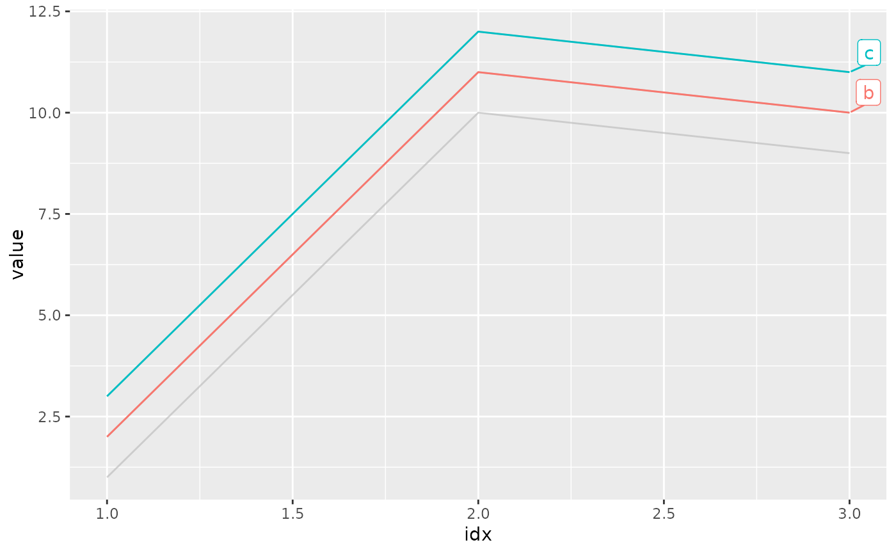
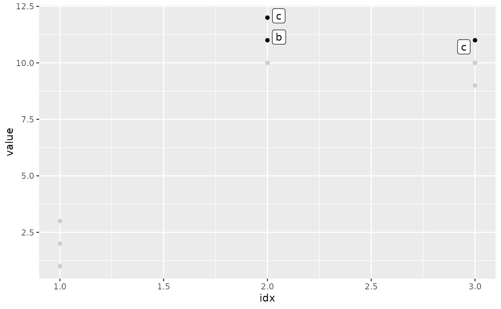
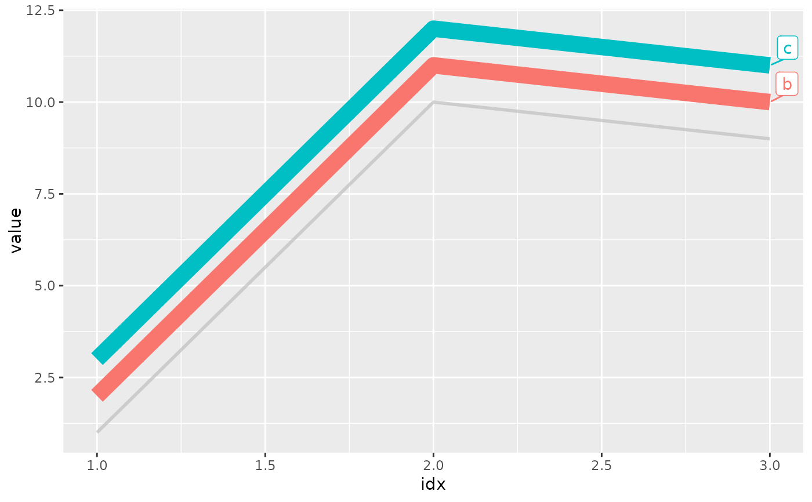

gghiglight() highlights (almost) any geoms according to the given predicates.
gghighlight( ..., n = NULL, max_highlight = 5L, unhighlighted_params = list(), use_group_by = NULL, use_direct_label = NULL, label_key = NULL, label_params = list(fill = "white"), keep_scales = FALSE, calculate_per_facet = FALSE, unhighlighted_colour = NULL )
Arguments
| ... | Expressions to filter data, which is passed to |
|---|---|
| n | Number of layers to clone. |
| max_highlight | Max number of series to highlight. |
| unhighlighted_params | Aesthetics (e.g. colour, fill, and size) for unhighlighted geoms. |
| use_group_by | If |
| use_direct_label | If |
| label_key | Column name for |
| label_params | A list of parameters, which is passed to |
| keep_scales | If |
| calculate_per_facet | (Experimental) If |
| unhighlighted_colour | (Deprecated) Colour for unhighlighted geoms. |
Examples
d <- data.frame( idx = c(1, 1, 1, 2, 2, 2, 3, 3, 3), value = c(1, 2, 3, 10, 11, 12, 9, 10, 11), category = rep(c("a", "b", "c"), 3), stringsAsFactors = FALSE ) # Highlight the lines whose max values are larger than 10 ggplot(d, aes(idx, value, colour = category)) + geom_line() + gghighlight(max(value) > 10)#># Highlight the points whose values are larger than 10 ggplot(d, aes(idx, value)) + geom_point() + gghighlight(value > 10, label_key = category)# Specify the styles for unhighlighted layer ggplot(d, aes(idx, value, colour = category)) + geom_line(size = 5) + gghighlight(max(value) > 10, unhighlighted_params = list(size = 1) )#>